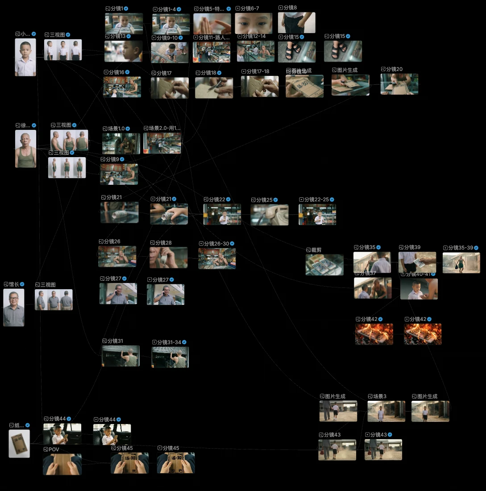
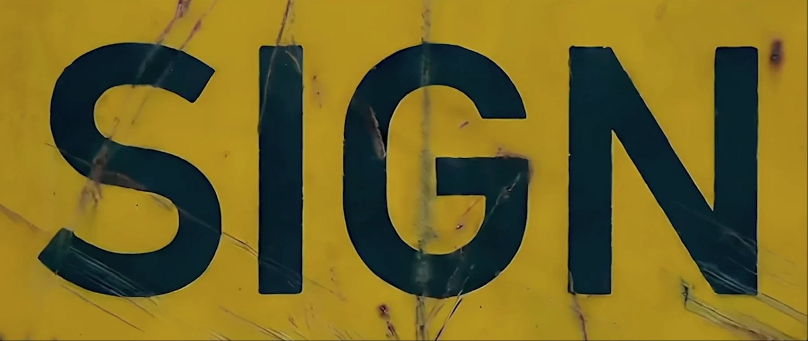
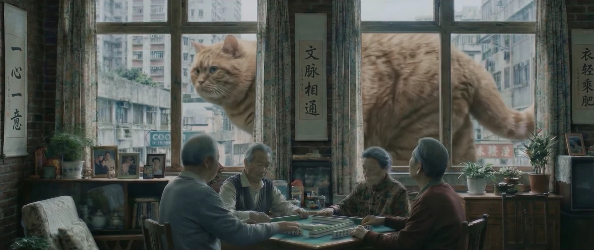
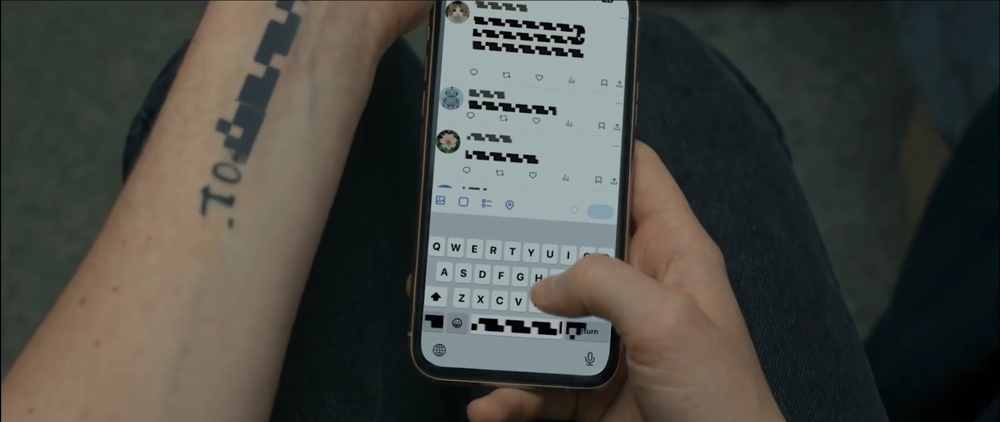
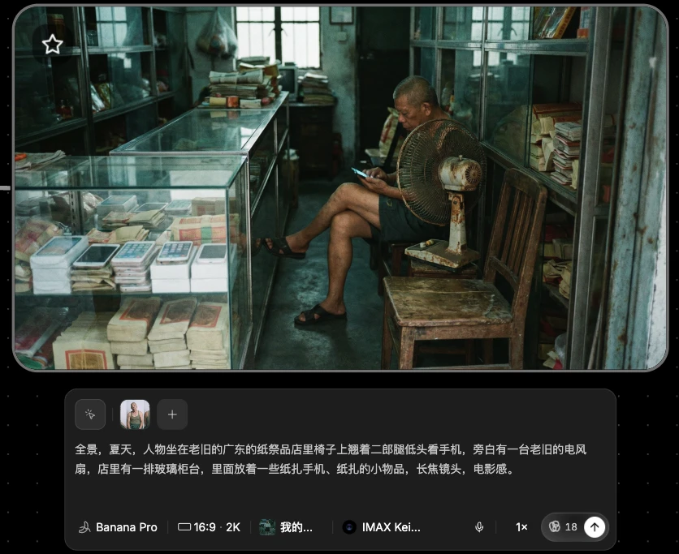
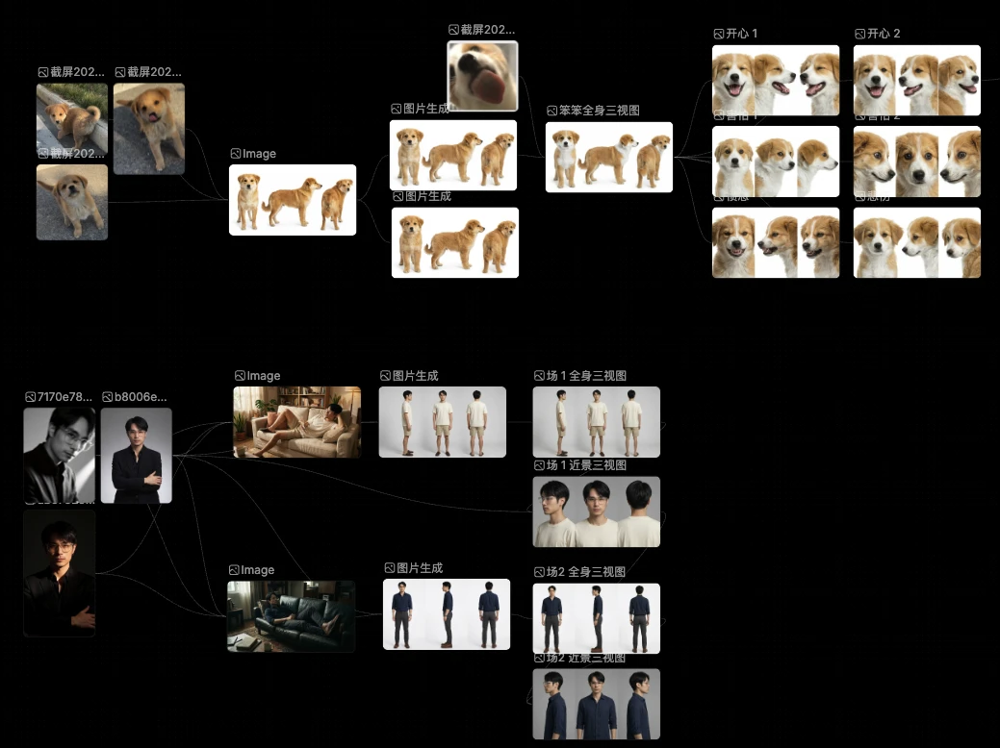
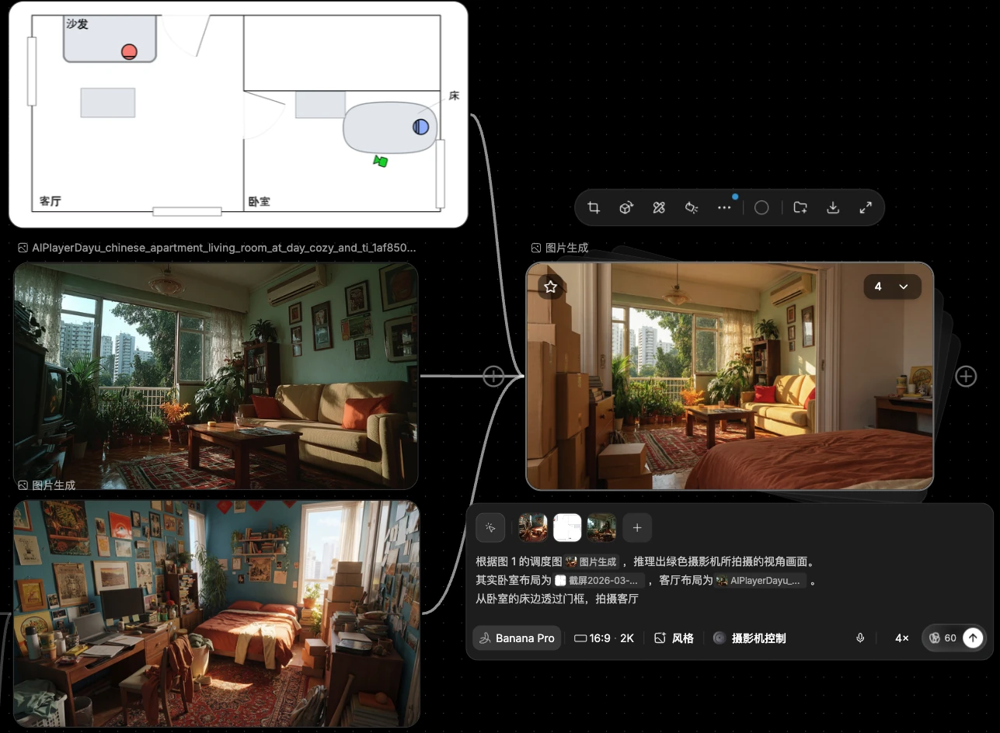
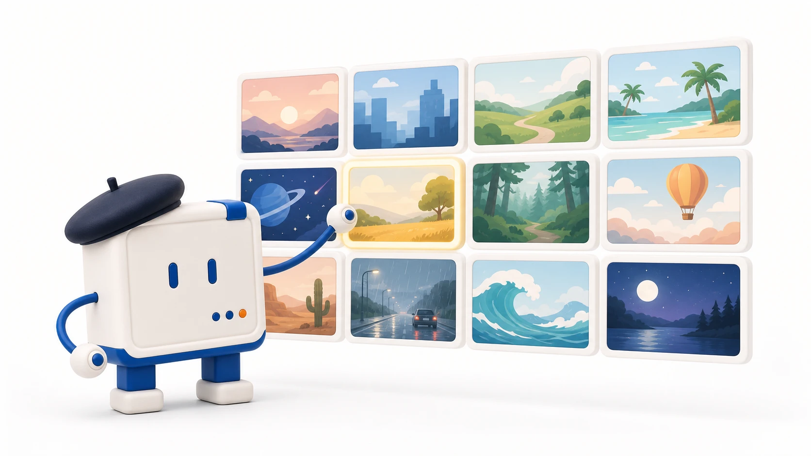

第一部分｜从故事到成片的五步流程
01｜五步链条
五个环节首尾相接
剧本大纲 → 资产物料 → 分镜脚本 → 分镜视频 → 后期剪辑。
走完这五步，脑子里的故事才变成一部能看的片子。
不同团队的细节各有不同，走的基本是同一条链。
02｜每步的分工
每一步都有明确的产出，也都有一个必须盯紧的重点。
| 步骤 | 做什么 | 重点 |
|---|---|---|
| 剧本大纲 | 把只有台词、角色、剧情的剧本，补上画面描述、人物表情、动作 | 画面和情绪的细节要具体 |
| 资产物料 | 准备人物图、场景图、道具图，像导演找演员、定服装、搭场景 | 风格一致，主角面部占比要高 |
| 分镜脚本 | 把每个镜头的画面、景别、运镜、风格、音效写成提示词 | 逐段仔细检查，提高成功率 |
| 分镜视频 | 用资产和脚本一段段生成，边生成边补参考、调提示词 | 看懂画面与提示词的关联 |
| 后期剪辑 | 挑可用片段拼接，补瑕疵、调节奏、配音配乐 | 挑片段、补瑕疵、优化节奏 |
五步里，分镜脚本怎么写、片段怎么接长，是两个最容易卡住的地方。
03｜工作台实景
制作面板把整部片子摊开在眼前，一眼能看清拍到哪一步了。
每个节点是一段素材：一张分镜图，或者一段分镜视频。
从资产长出分镜：左侧是角色三视图等资产物料，右侧的分镜一段一段往后长。
边生成边调整：结合每一版画面补参考图、改提示词，稳了再往下。

《纸手机》全片制作面板
第二部分｜分镜脚本与突破 15 秒
04｜三段结构
三段写全，模型才知道这是个什么故事、该用什么风格、每个镜头要拍什么。
基础设定：写清角色、场景和大致的剧情，一次交代清楚。
其它约束：整片的风格、音效、节奏写在这里，每个镜头都照着遵守，不用逐段重复交代。
画面描述：一个镜头一段，写清什么人、在哪里、做了什么、用什么运镜。
05｜脚本实样
一份能直接用的脚本，按时间码把每个镜头写到了画面上。
赛博悟空游戏预告片的分镜脚本，用的正是这三段结构。以下为节选：
【角色】赛博朋克版孙悟空。拟人化猴子，赤褐色毛发，身穿黑金机甲鳞片护甲，金色头冠伸出两根雉鸡翎。
【镜头设定】开场在纯白影棚环境，从白色菜单无缝过渡到夜晚的赛博朋克巨城。一镜到底，无剪辑。
【风格 · 音效】超写实 CGI。UI 段落配清脆的数字点击声，世界揭示段落配雨声与远处钟声。
【0s–2s】平视镜头。悟空蹲伏在白色地面上，透过墨镜望向镜头；光标点击 CONTINUE。
【2s–5s】菜单收拢，镜头推近。他摘下墨镜，从耳中捏出金色小棍，层层展开重构成重型加特林。
三段在脚本里的位置：前三行交代角色、镜头设定和风格音效，属于基础设定和其它约束；后面几行按时间码往下排，一段一个镜头。
写多细看题材：动作戏、武打戏一般写得很长，普通剧情把关键细节说清即可。
06｜三种接法
单次生成只有十几秒，更长的内容靠把片段接起来。
前序视频作参考：用上一段视频的尾帧或关键帧，续写下一段。适合连续延展的剧情。
同段多次生成再拼接：同一段提示词多次生成，挑可用的分镜剪到一起。适合动作、打斗画面。
故事板分开生成：先做好几张风格一致的分镜故事板，再分段生成。适合镜头跨度大的段落。
第三部分｜三部爆款的叙事经验
07｜三种题材
题材不同，创作者不同，把故事落成镜头的着力点就不同。
《SIGN》｜科幻创意：极简设定撑起变化，成片靠从大量候选里挑选。
《纸手机》｜纪实人文：扬长避短，绕开模型拍不稳的地方。
《带你去玩球》｜剧情宠物：前期把人物场景资产做足，分镜再一段段手写。
08｜《SIGN》｜DiDi_OK
一条规则，无限画面
牌子上写什么，现实就发生什么。
题材：科幻创意短片。
特点：画面能变出的花样几乎没有上限。

《SIGN》成片截帧招牌特写
来源：《SIGN》原片
《SIGN》的做法
创意类短片先把想表达的东西定死，再让 AI 去跑画面。
从表达出发：想清楚非说不可的故事内核是什么，再考虑怎么生成。
定粗时间线：起承转合、升级节点、高潮和落点先定住，再让 AI 探索具体画面。
挑选定成片：复杂镜头成功率低，大量镜头靠反复生成后挑选，个别镜头借助 Blender 和后期完成。

《SIGN》成片截帧巨猫麻将场景

《SIGN》成片截帧文字被吞食场景
09｜《纸手机》｜WAI-你听
三天成片，播放破亿
一个孩子攒了很久的零花钱，就想买一部纸手机。
这是一部纪实人文短片。成片后获人民日报、央视新闻转发。
风格锚定图：开拍前先出一张定调的画面，把场景、季节、人物状态、镜头类型和质感一次写进提示词，后面的镜头都参照它生成。
全景，夏天，人物坐在老旧的广东的纸祭品店里椅子上翘着二郎腿低头看手机，旁边有一台老旧的电风扇，店里有一排玻璃柜台，里面放着一些纸扎手机、纸扎的小物品，长焦镜头，电影感。

《纸手机》风格锚定图生成界面
来源：《纸手机》原片
《纸手机》的镜头经验
《纸手机》的镜头，全都安排在 AI 拍得稳的地方。
这三条是纪实人文题材的做法，共同点是顺着 AI 在面部表情上的能力边界来安排镜头。
特写与空镜代替对话：手部动作、物件细节入画，绕开人物面部容易崩的问题。
核心道具缝合全片：纸手机贯穿始终，把碎片化的镜头缝成一个整体。
结尾长镜头留情绪：近两分钟的长镜头不加台词，给情绪留出空间。
10｜《带你去玩球》｜大羽玩AI
一个人 15 天做完
从一只狗的视角，讲它带着最爱的球去找主人玩。
这是一部剧情短片，入围北京国际电影节 AIGC 创意短片单元。
角色资产板：板上有狗的全身三视图和各种情绪的形象图，也有主人角色的定妆图和三视图，用来控制不同镜头里的形象和表情。

《带你去玩球》角色资产板
来源：《带你去玩球》原片
《带你去玩球》的前期功课
把前期资产做扎实，分镜坚持手写。
角色：先做定妆图，再做各种情绪的形象图，方便控制表情。
场景：先出基础图，再精修出多角度视角。
空间：一张全景俯瞰图作参考，让镜头之间的空间对得上。
分镜：坚持手动用纯文字写。分镜是导演意图最关键的环节。

《带你去玩球》场景资产板
图片、视频和剪辑按镜头同步往前推，边做边补。
11｜共同经验
三部片子题材不同，做法却指向同三件事。
先想清楚要表达什么：表达定不下来，画面再好看也拼不成一部片子。
顺着模型能拍稳的地方设计镜头：把镜头安排在模型擅长的区域，避开它拍不稳的部分。
从大量生成里挑选：生成量决定可选范围，挑选决定成片。

小A在讲片子
小结
先有表达，后有镜头。
- 五步流程出片：剧本大纲、资产物料、分镜脚本、分镜视频、后期剪辑。五步基础流程谁都能照着走，套上去就能出一部片子。
- 三段式结构的分镜脚本：用基础设定来交代故事，用约束来统一风格和音效，用画面描述来写清一个个镜头。
- 解法随题材变化：题材、画面、人物关系不同，每一步的具体解法就不同。先想清楚要表达什么，顺着模型能拍稳的地方设计镜头，再从大量生成里挑选。